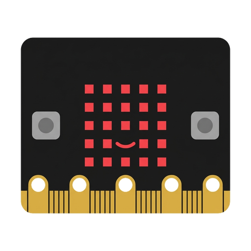

Micro:bit
La placa microcontroladora per a projectes oberts i ciutadans
La BBC micro:bit és una petita placa programable amb una matriu de 25 LEDs, dos polsadors, acceleròmetre, brúixola i ràdio. Les funcions de maquinari depenen de la revisió: la V2 incorpora logotip tàctil, micròfon i altaveu; altres funcions i connexions poden variar. Identifica la versió abans de dissenyar una activitat.
Una placa per mesurar el món
La micro:bit deixa començar amb botons i matriu de 5 × 5 i créixer cap a dades de moviment, llum, orientació, ràdio i connexions de pins. Pregunta sempre quin fenomen s'està mesurant, quina unitat o interval s'utilitza i què no pot concloure el grup a partir d'una lectura breu.
Organització de la sessió
- Connecta una placa i prova els botons abans de distribuir-la.
- En parelles, una persona construeix els blocs i una altra anticipa el resultat; les dues alternen el teclat i la placa.
- Verifica el comportament amb un exemple de prova preparat pel docent.
- Tanca la sessió amb una explicació de quina entrada activa el programa i quin senyal indica el resultat.
Compatibilitat i accessibilitat
El disseny dels pins i les funcions varien entre micro:bit V1 i V2; la V2 afegeix, entre altres funcions, micròfon, altaveu i logotip tàctil. Abans d'introduir so, orientació o accessoris, identifica el model de la placa i revisa els requisits de connexió i d'alimentació. El codi pot compartir-se en blocs, Python o explicació oral. Consulta la guia oficial de funcions de la micro:bit.
Recursos oficials del fabricant
Per consultar materials, compatibilitat i instruccions actualitzades. Les activitats de Robòtica200 són adaptacions pròpies.
- Lliçons de micro:bitUnitats i reptes de disseny filtrables per edat, matèria i eina.
- Primers projectes amb MakeCodeItinerari per practicar seqüències, bucles, entrades, sortides i sensors.
- Make it: code itProjectes filtrables per nivell, tema, llenguatge i característica de la placa.
Tutorials de Micro:bit
Tutorials pas a pas pensats per a l'ús directe a l'aula.